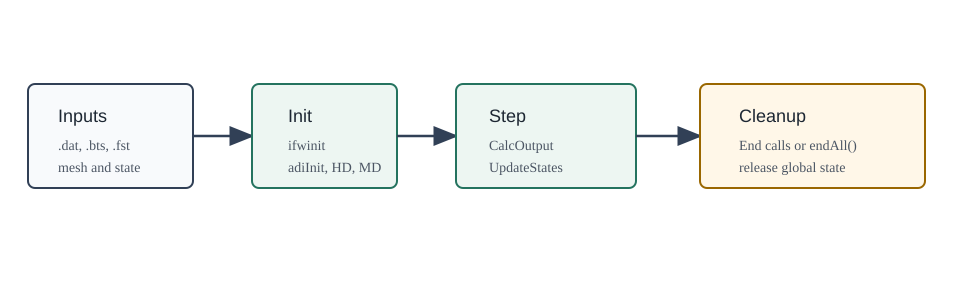

OWENSOpenFASTWrappers.jl
OWENSOpenFASTWrappers provides Julia lifecycle wrappers for selected OpenFAST libraries used by OWENS: InflowWind, AeroDyn, HydroDyn, and MoorDyn. It also exposes OpenFAST driver executables such as TurbSim through OWENSOpenFAST_jll.

The package can be used standalone for focused OpenFAST-library calls or as the OpenFAST-facing backend for OWENS coupled simulations. Most wrappers follow the same pattern: initialize a library with input files and mesh/state data, call output and state-update functions at each time step, then end the instance to release global state.
Wrapper Families
| Family | Primary functions |
|---|---|
| InflowWind | ifwinit, ifwcalcoutput, ifwend |
| AeroDyn | adiInit, adiCalcOutput, adiUpdateStates, adiEnd, plus the higher-level setupTurb path |
| HydroDyn | HD_Init, HD_CalcOutput, HD_UpdateStates, HD_End |
| MoorDyn | MD_Init, MD_CalcOutput, MD_UpdateStates, MD_End |
| Driver binaries | turbsim, aerodyn_driver, hydrodyn_driver, inflowwind_driver, moordyn_driver |
Documentation Map
- Quickstart covers installation and the smallest InflowWind-style lifecycle.
- OpenFAST Artifacts covers native-library resolution and platform smoke checks.
- Wrapper Lifecycle explains init/calc/update/end ordering and global state cleanup.
- AeroDyn and InflowWind records the aerodynamic wrapper path and input-file expectations.
- HydroDyn and MoorDyn covers hydrodynamic and mooring wrappers.
- Frames, Units, and Validation lists unit/frame assumptions and test-hardening rules.
- API Reference is the generated function and type index.